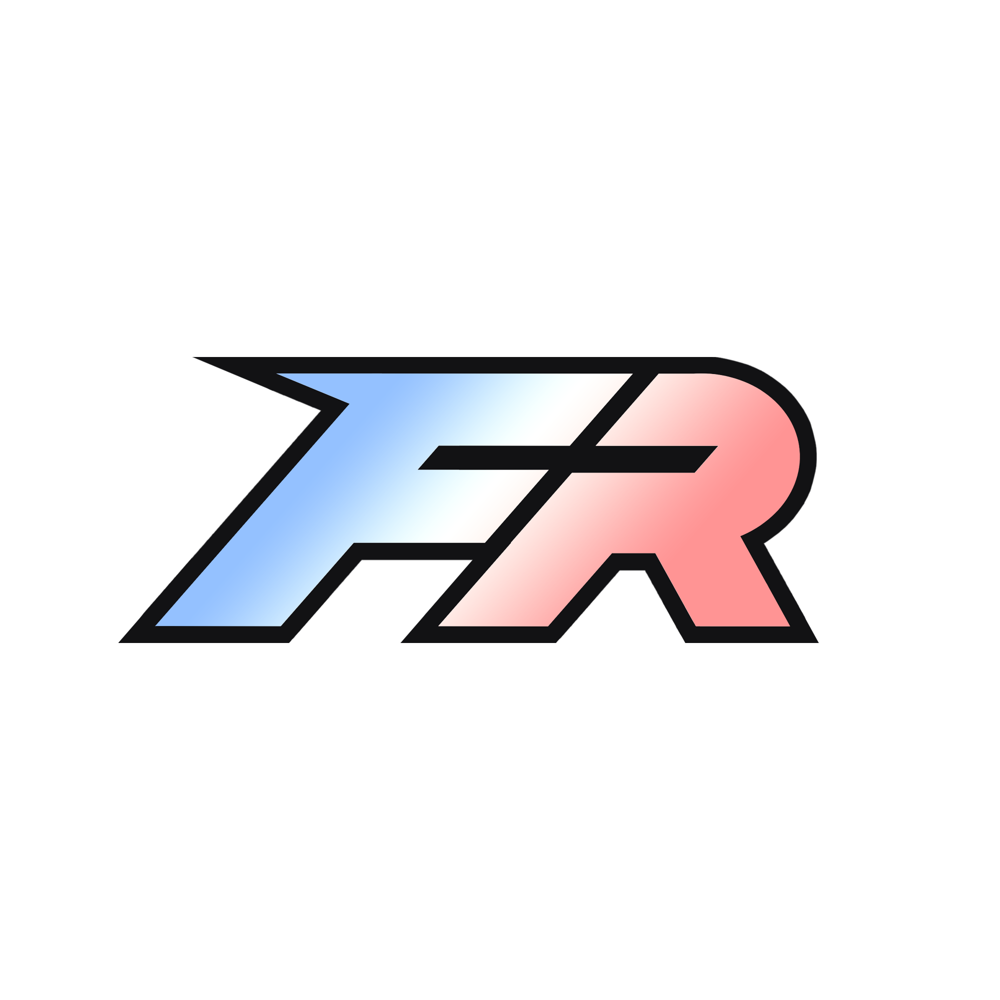
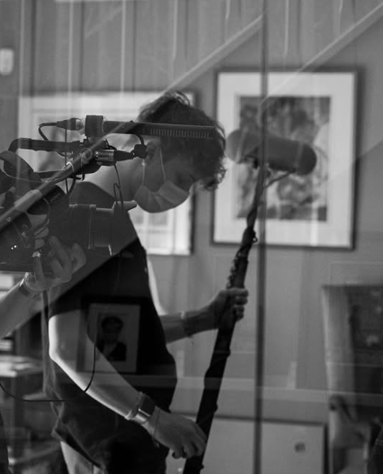

Mes Projets
Finals Rush
Média francophone axé sur l'esport de THE FINALS qui a pour but de devenir la référence française en terme d'analyses, de casts et d'événements compétitifs.
- Gestion complète de la régie OBS en direct sur des événements esport internationaux — dizaines de sources simultanées, replays, transitions, multi-stream
- Coordination technique et logistique entre les équipes staff de plusieurs tournois en parallèle (RFL, WNG, tournois européens)
- Développement d'une web app sur mesure pour la synchronisation en temps réel des overlays HTML (brackets, scores, leaderboards) avec les sources OBS
- Création des stinger, overlay et logo sur After Effect, Photoshop et Premiere Pro

Taeootf
Ma chaîne Twitch sur laquelle je diffuse mon gameplay sur The Finals. Diffusion de matchs, scrims et entraînements de mon équipe Esport ABSORBE.
- Création des stinger, overlay et logo sur After Effect, Photoshop et Premiere Pro
- Diffusion sur Twitch grâce à OBS Studio
Mardi Je T'aime
Un événement en direct en collaboration avec de nombreux créateurs/streamers. Moments de divertissement sur des jeux vidéo avec une ambiance entre copains et fun.
- Montage son et vidéo sur Premiere Pro
- Best-of et clip montage sur YouTube et TikTok
- Création des stinger, overlay et logo sur After Effect, Photoshop et Premiere Pro
- Diffusion sur Twitch et YouTube via OBS Studio
Quitte ou Double
Une série de 4 épisodes en collaboration avec les 2ème année cinéma. Une histoire émouvante entre un jeune homme et sa grand-mère atteinte de trouble de la mémoire, fan d'un jeu télévisé fictif.
- Perchman — épisodes 1 et 4
- Chef opérateur son — épisodes 1 et 4
- Montage son, Sound Design et mixage sur Pro Tools — épisode 4
- Composition musicale sur Ableton Live — épisode 4
Paralysie
Ma toute première réalisation sonore dans un contexte horrifique. Réalisé avec des élèves de 2ème année cinéma.
- Chef opérateur son
- Perchman
- Montage son et mixage sur Pro Tools
Archive 81
Sound Design
Exercice réalisé en seulement 3 heures sur un extrait du premier épisode de Archive 81.
- Soundbank sur Soundly
Le Temps d'une Vie
Projet de son à l'image pour l'examen d'entrée à la spécialisation Sound Design.
- Enregistrement de la soundbank
- Réalisation et mixage sur Pro Tools
ELK
Sound Design sur un extrait de cinématiques du jeu vidéo ELK.
- Enregistrement de la soundbank et des voix
- Réalisation et mixage son sur Pro Tools
Réminiscence
Composition de ma toute première musique de film. Examen de première année en collaboration avec les 1ère année cinéma.
- Perchman
- Montage son et voix sur Pro Tools
- Composition musicale sur Logic Pro X
Ze Fromage Climber
Réalisation d'un jeu en 2D en collaboration avec les étudiants de la filière Jeux vidéo.
- Enregistrement soundbank
- Code et intégration sonore sur WWise et Unreal Engine 4
- Composition sur Logic Pro X
- Mix sur Reaper
Temple Path
Composition de la musique pour un jeu de puzzle inspiré du Japon traditionnel. Une boucle musicale qui se mêle avec l'univers du jeu et son gameplay.
- Composition et mix sur Ableton Live
Asylum
Jeu d'horreur dont le but est de s'échapper d'un asile infesté de zombies en ramassant des clefs. Apprentissage des techniques de développement, objectif simple, environnement absurde mais efficace.
- Enregistrement soundbank
- Code et Level Design
- Intégration sonore et d'assets sur WWise et Unreal Engine 4
L'esprit critique
Podcast proposé par Mediapart dont les voix débattent de l'actualité culturelle. J'ai dérushé, monté et réalisé l'épisode 127, puis échangé avec le client pour valider les masters.
- Montage son sur Séquoia
Europe 2 Promo
Friday Rock
Une promo pour le Europe 2 Friday Rock réalisée dans le cadre d'une candidature au poste de technicien-réalisateur son pour Europe 2.
- Réalisation et mixage sur Ableton Live
Backstage Arte Radio
épisodes 1 & 2
Podcast Arte Radio sur des anecdotes des régisseurs de MHD et NTM. Accompagner le narrateur avec le son pour transporter l'auditeur dans les coulisses.
- Création d'une soundbank
- Derush et réalisation sur Pro Tools
- Composition musicale sur Ableton Live
Synthé Modulaire
Exercice de 3ème année en spécialité Sound Design : créer des instruments uniquement avec des synthétiseurs modulaires via VCV Rack.
Anoy
Commencé en cours de Logic Pro X, peaufiné à la maison. 2ème projet MAO — tous les instruments synthétisés sur Vital, sauf un piano LABS et une guitare enregistrée sur carte son.
La Delorean DMC 13
Projet de premier semestre en première année : une pub radio. Réalisé sur Logic Pro X avec des voix enregistrées en studio. Musique non-copyright trouvée sur YouTube.
Premier Projet MAO
Mon tout premier projet de MAO : créer un drum kit en synthèse sur EXS24 dans Logic Pro X. La guitare est un sample modifié en rythme et composition.
Premier Projet de Fiction
Créer une fiction sonore avec l'aide d'une banque de son — exercice fondateur.
- Réalisation sur Logic Pro X
À Propos

Théophile Meunier — Plouguiel, Bretagne
Technicien son de formation et opérateur de production live, 23 ans, à l'aise aussi bien en studio que sur le terrain.
Après trois ans d'études en techniques du son (3iS), dont une spécialisation Sound Design en alternance chez Lagardère Media News, j'ai développé une polyvalence technique solide : prise de son, post-production, mixage, sound design, intégration sonore pour le jeu vidéo (Unreal Engine, Wwise, Fmod). Cette base m'a appris à m'adapter vite à des univers de production très différents.
En parallèle de mes missions freelance — restauration d'archives audio, captations à l'Académie française et à l'INJA, réalisation de podcasts de bout en bout — j'ai développé une activité de production live dans l'univers esport. Je gère la régie OBS en direct sur des événements internationaux, coordonne les équipes staff de plusieurs tournois en simultané, et j'ai développé des outils sur mesure pour automatiser et dynamiser la diffusion en direct. Cette expérience m'a entraîné à travailler sous pression, à jongler entre des responsabilités techniques, logistiques et éditoriales, et à m'adapter en temps réel aux imprévus.
Musicien amateur (trompette, guitare), j'assure également la sonorisation de concerts pour mes propres groupes ou d'autres artistes.